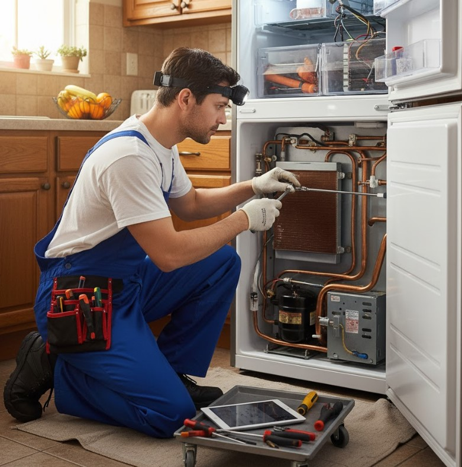

نصائح لصيانة وإصلاح الثلاجة بنفسك في المنزل
بعض خطوات العناية بالثلاجة يمكن تنفيذها في المنزل بأمان، بينما تحتاج الأعطال الكهربائية ودائرة التبريد إلى فحص متخصص.
من أكثر المواقف المزعجة أن تفتح الثلاجة وتكتشف أن التبريد لم يعد كما كان، أو تسمع صوتًا جديدًا لم تعتد عليه. قبل التفكير في تغيير الجهاز بالكامل، توجد مجموعة من الفحوصات البسيطة التي تساعدك على اكتشاف بعض الأسباب الشائعة.
في هذا الدليل من أرشيف مدير الصيانة، نوضح ما يمكنك متابعته بنفسك، وما الحالات التي يفضل فيها عدم المخاطرة واستدعاء فني متخصص.
عطل الثلاجة مش واضح؟
لو المشكلة مستمرة أو مرتبطة بالكهرباء أو دائرة التبريد، التشخيص الصحيح أهم من تجربة إصلاح عشوائية.
اطلب فحص الثلاجةنصائح أساسية لصيانة الثلاجة بنفسك
- تنظيف المكثف: تراكم الغبار حول مناطق التهوية والمكثف قد يقلل كفاءة التخلص من الحرارة. افصل الكهرباء ونظف الأجزاء التي يمكن الوصول إليها بأمان وفق تصميم الجهاز.
- فحص جوان الباب: تأكد من سلامة الإطار المطاطي وعدم وجود تشققات أو أجزاء مفكوكة. يمكن استخدام اختبار الورقة بشكل تقريبي للتأكد من إحكام الإغلاق.
- مراجعة درجة الحرارة: استخدم إعدادًا مناسبًا وفق دليل الثلاجة، وتجنب التبريد المبالغ فيه دون سبب.
- عدم سد فتحات الهواء: اترك مساحة مناسبة أمام فتحات توزيع الهواء داخل الثلاجة والفريزر.
الفريزر بيجمد والثلاجة من تحت مش بتبرد.. إيه السبب؟
هذه الحالة قد تحدث عندما تعمل منظومة التجميد بينما لا يصل الهواء البارد بصورة كافية إلى حجرة التبريد. من الأسباب المحتملة:
- حجب فتحات الهواء: تكديس الأطعمة أمام فتحات التهوية قد يمنع انتقال البرودة.
- مشكلة في مروحة المبخر: تعطل المروحة أو صدور صوت غير طبيعي منها قد يؤثر على توزيع الهواء.
- تراكم الثلج: في بعض الموديلات قد يؤدي تراكم الثلج بسبب خلل في نظام إزالة الثلج إلى حجب مسارات الهواء.
كيفية التعامل مع تسريب المياه من الثلاجة
تحديد مكان المياه أول خطوة. فالمياه داخل حجرة التبريد تختلف أسبابها عن المياه أسفل الجهاز أو المياه المرتبطة بموزع المياه.
| مكان المياه | سبب محتمل | ما يمكنك فحصه |
|---|---|---|
| أسفل الأدراج | انسداد فتحة التصريف | فحص فتحة التصريف وتنظيف ما يمكن الوصول إليه بأمان |
| أسفل أو خلف الثلاجة | مشكلة في خرطوم أو وعاء تصريف | فحص وجود كسر أو انفصال واضح |
| حول فلتر المياه | تركيب غير محكم أو تلف الفلتر | التأكد من التثبيت الصحيح وفحص جسم الفلتر |
هل فصل الثلاجة كل ليلة يوفر الكهرباء؟
فصل الثلاجة يوميًا ليس أسلوبًا مناسبًا لتوفير الكهرباء؛ الثلاجة مصممة للحفاظ على درجة حرارة مستقرة من خلال التشغيل والفصل التلقائي حسب الحاجة. قطع الكهرباء بشكل متكرر قد يسبب تذبذبًا في درجة الحرارة ويؤثر على حفظ الطعام.
إذا كان هدفك تقليل الاستهلاك، الأفضل معالجة أسباب ارتفاع الاستهلاك مثل ضعف إحكام الباب، انسداد مناطق التهوية، أو وجود عطل يجعل الضاغط يعمل لفترات غير طبيعية.
صيانة دورية بسيطة تحافظ على الثلاجة
- نظف الأرفف والأجزاء الداخلية بصورة منتظمة.
- راجع جوان الباب وتأكد من الإغلاق الجيد.
- لا تضع الطعام الساخن مباشرة داخل الثلاجة.
- لا تكدس الأطعمة أمام فتحات توزيع الهواء.
- راقب أي تغير مفاجئ في صوت الموتور أو مستوى التبريد.
متى تتوقف عن الإصلاح بنفسك وتطلب فنيًا؟
هناك أعطال لا يفضل التعامل معها بالتجربة المنزلية، خصوصًا عندما تكون المشكلة في الكهرباء أو الضاغط أو دائرة التبريد.
- سخونة شديدة وغير معتادة مع ضعف التبريد.
- رائحة احتراق أو علامات شرر أو تلف في الأسلاك.
- توقف التبريد رغم استمرار تشغيل الجهاز.
- أصوات ميكانيكية قوية أو متكررة بشكل غير طبيعي.
- الحاجة إلى فتح دائرة التبريد أو التعامل مع غاز التبريد.
مش قادر تحدد العطل؟ سيب التشخيص للمتخصص
مدير الصيانة يقدم خدمة فحص وصيانة وإصلاح الأجهزة المنزلية، مع إمكانية الزيارة المنزلية، كما يمكن الاستفسار عن استقبال الجهاز في مقر الشركة حسب نوع الحالة.
احجز أو استفسر الآنأسئلة شائعة
ليه الثلاجة بتجمد الأكل في الرفوف السفلية؟
قد يكون السبب إعداد تبريد منخفضًا جدًا، أو وجود مشكلة في التحكم بدرجة الحرارة، أو وضع الأطعمة أمام فتحة خروج الهواء البارد مباشرة. إذا استمرت المشكلة بعد ضبط الاستخدام، يفضل الفحص.
ليه صانع الثلج وقف فجأة؟
يمكن البدء بفحص وضع التشغيل وتدفق المياه والفلتر إذا كانت الثلاجة مزودة بموزع مياه. إذا استمرت المشكلة، يحتاج الجهاز إلى تشخيص حسب الموديل.
إيه الطريقة الأفضل لنقل الثلاجة؟
الأفضل نقلها في وضع رأسي قدر الإمكان واتباع تعليمات الشركة المصنعة قبل إعادة التشغيل. إذا تم نقلها على جانبها أو بزاوية كبيرة، اتبع فترة الانتظار الموصى بها في دليل الموديل.
هل كل مشكلة في التبريد معناها إن الثلاجة محتاجة فريون؟
لا. ضعف التبريد قد ينتج عن أسباب متعددة، منها توزيع الهواء أو نظام إزالة الثلج أو المروحة أو التحكم في الحرارة. لذلك يجب تشخيص السبب أولًا قبل التفكير في شحن غاز التبريد.
هل تواجه مشكلة أو عطلاً في جهازك؟
تواصل مع فريق "مدير الصيانة" الآن للحصول على استشارة فنية وفحص منزلي فوري بأعلى معايير الدقة والأمان.